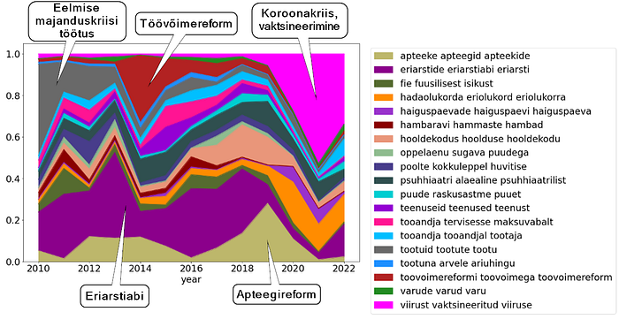

Projects
Some projects I've contributed to. All outcomes come from teamwork — credit is shared.
Creation of ASR models
At Feelingstream I helped create speech-recognition models from scratch in Estonian and Scandinavian languages:
- data collection and preparation for transcribing
- leading manual transcribing team work (including training)
- data preparation for model training
- model training and optimisation
- model testing
- presenting models to customers
I've also adapted models for specific customers. Some models I trained as a hobby are publicly available.
Automatic topic extraction from texts
Analysing customer conversations quickly reaches a point where you need to understand what's said in the texts. You don't want to do that manually.
I've experimented with different solutions, from classical LDA to large language models. I wrote my master's thesis on this topic.
Public example: analysis of Estonian parliament stenograms.

Preparing for ISO 27001 certification
Data science is easy: you pull data from the web, grab code from GitHub, and train your model.
Building an organisation with clear processes around data access and handling is a different challenge. ISO 27001 certification helped Feelingstream build the foundations for information security management.
For certification I helped (together with many partners):
- create a framework for the information security management system
- implement it
- describe and implement key information-security processes
- perform risk assessment and risk management